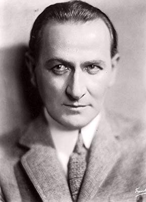

#7246 Sein oder Nichtsein
Alternativ: To Be or Not to Be
Auszeichnungen: für 1 Oscars nominiert


 IMDB-Wertung: 8.2 / 10
IMDB-Wertung: 8.2 / 10  Metascore: 0
Metascore: 0 
Am Vorabend des Zweiten Weltkrieges muß sich auch die Warschauer Theaterwelt dem Naziregime beugen. Anstatt eines antinationalsozialistischen Stücks wird "Hamlet" wieder auf den Spielplan gesetzt. Als die Deutschen in Polen einmarschieren, begeben sich die Schauspieler in den Widerstand. In den deutschen Uniformen des Bühnenfundus drehen sie die tollsten Dinger: Sie machen Nazispitzel unschädlich, führen die Gestapo in die Irre und treiben ihre Aktionen auf eine gefährliche Spitze ...
Jahr: 1942
Dauer: 96 Minuten
FSK: 12
Land: USA Studio: United ArtistsTonspuren:
Untertitel: Deutsch,
Auflösung: 1080p (1920x1080) Größe: 10752 MB
Genre: Komödie, Krieg
Regisseur: Ernst Lubitsch
Drehbuch: Melchior Lengyel
Soundtrack:
Darsteller:
- Carole Lombard als Maria Tura
- Jack Benny als Joseph Tura
 Robert Stack als Lieutenant Stanislav Sobinski
Robert Stack als Lieutenant Stanislav Sobinski- Felix Bressart als Greenberg
- Lionel Atwill als Rawitch
- Stanley Ridges als Professor Siletsky
 Sig Ruman als Colonel Ehrhardt
Sig Ruman als Colonel Ehrhardt- Tom Dugan als Bronski
- Charles Halton als Producer Dobosh
 George Lynn als Actor-Adjutant
George Lynn als Actor-Adjutant- Henry Victor als Captain Schultz
- Maude Eburne als Anna
- Halliwell Hobbes als General Armstrong
- Miles Mander als Major Cunningham
- Sven Hugo Borg als German Soldier , uncredited
- Buster Brodie als Townsman , uncredited
 Helmut Dantine als Co-Pilot , uncredited
Helmut Dantine als Co-Pilot , uncredited James Finlayson als Scottish Farmer with Mustache , uncredited
James Finlayson als Scottish Farmer with Mustache , uncredited- John Kellogg als Polish RAF Flyer , uncredited
- Maurice Murphy als Polish RAF Pilot , uncredited
- Frank Reicher als Polish Official , uncredited
- Gene Rizzi als Polish RAF Pilot , uncredited
- Hans Schumm als Special Investigations Squad , uncredited
 Stephen Soldi als Warsaw Bystander , uncredited
Stephen Soldi als Warsaw Bystander , uncredited- Roland Varno als Pilot , uncredited
- Ernö Verebes als Stage Manager , uncredited
- Dorothy Vernon als Member of Audience at Performance of Hamlet , uncredited
- Wolfgang Zilzer als Man in Bookstore , uncredited
- Rudolph Anders als Gestapo Sergeant at Desk at Top of Hotel Stairs , uncredited
- Paul Barrett als Polish RAF Pilot , uncredited
- Peter Caldwell als Wilhelm Kunze , uncredited
- Alec Craig als Scottish Farmer Without Mustache , uncredited
- Jack Deery als Member of Audience at Performance of Hamlet , uncredited
- Leslie Denison als Captain , uncredited
- James Gillette als Polish RAF Pilot , uncredited
- Leyland Hodgson als Second Reporter , uncredited
- Shep Houghton als German Soldier , uncredited
- Olaf Hytten als Polonius in Warsaw , uncredited
- Charles Irwin als Reporter , uncredited
- Tiny Jones als Townswoman , uncredited
- Adolf E. Licho als Prompter , uncredited
-  Wilbur Mack als Member of Audience at Performance of Hamlet , uncredited
- John Meredith als English Wireless Operator , uncredited
- Russ Powell als Warsaw Bystander , uncredited
- Otto Reichow als Co-Pilot , uncredited
- Count Stefenelli als Member of Audience at Performance of Hamlet , uncredited
- Armand 'Curly' Wright als Makeup Man , uncredited
Datei: X:\1900-1949\Sein oder Nichtsein (1942, FSK12, 1920x1080).mkv seit 09.10.2017
Festplatte: HD 1900-1970
 Es gibt insgesamt 80 Filme in der Gruppe '1900-1949'
Es gibt insgesamt 80 Filme in der Gruppe '1900-1949'